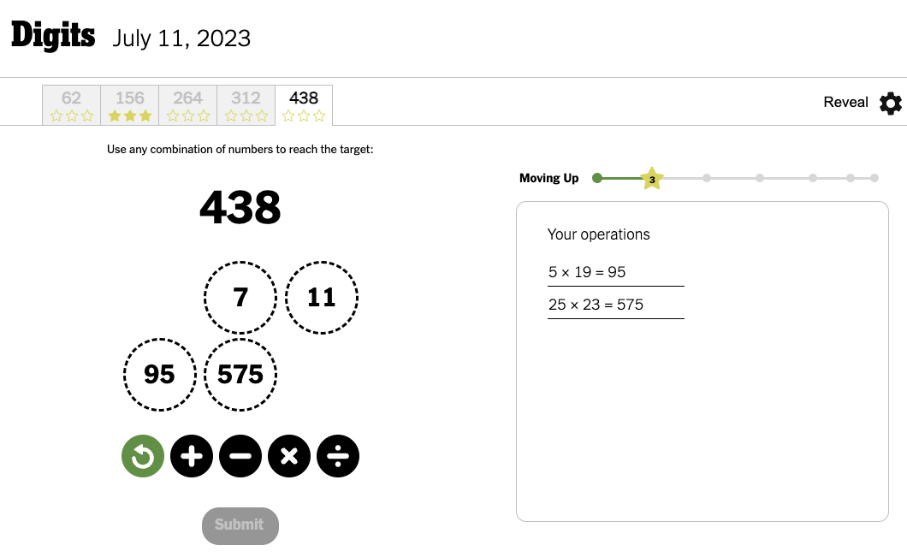
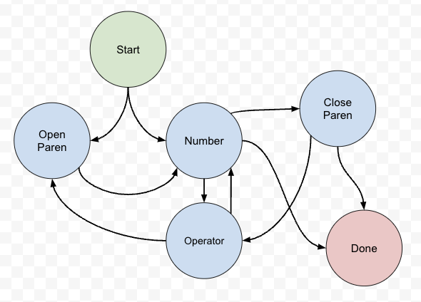
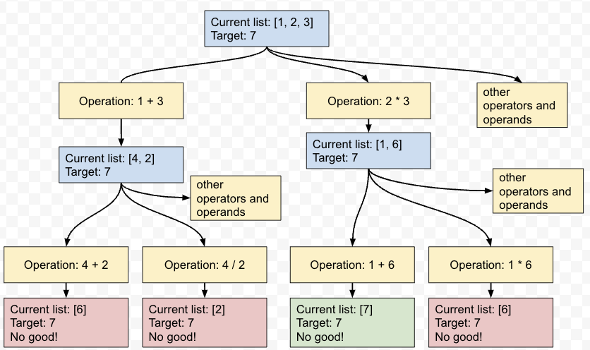
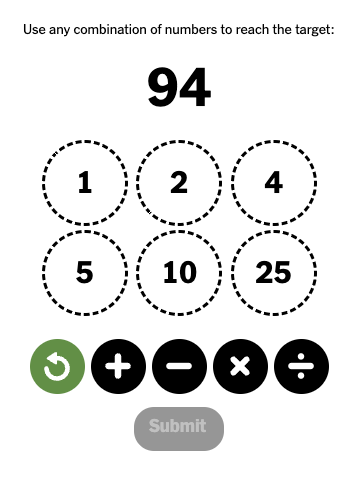

Brute-forcing the NYT Digits game
Jul 11, 2023 · 3304 words · 16 minutes read
You’re given a list of integers and a target number. You can add, subtract, multiply, or divide numbers, and you can use the result for future operations. Once you have used a number in an operation, you may not use it again. Your task is to find a combination of arithmetic steps to get to the target number.
For example, if you’re given
[1, 2, 3]and the target is9, a valid path would be the following:Current numbers: [1, 2, 3] (1 + 2) -> 3, current numbers now [3, 3] (3 * 3) -> 9, current numbers now [9], target reached Resulting in the path: [(1 + 2), (3 * 3)]Given the input
[5, 7, 11, 19, 23, 25]and the target number438, find a path to the target.
Is this your third algorithm interview question in a hellish day of interviewing for a programming job where you won’t really see problems like this?
No!
This is the new New York Times game, Digits:

This game recently came out, and after playing for a while, I got to thinking more about the game.
Part of the game is that you progress through 5 different combinations of input lists and targets. For example, in the above screenshot, you can see that I already solved the 156 puzzle. When I first started playing, I assumed the difficulty would progress as you went through them, with 62 being the easiest and 438 being the hardest.
This got me thinking: this is a very non-linear game, where it can sometimes feel like you make very little progress. How would you define difficulty for these problems?
Digits & difficulty
In the real game, you get 1-3 stars depending on how close you get to the target, with 3 being an exact match. For now, let’s just look at getting exactly to the target. I’m mostly interested in the 3-star solutions, and there are plenty of other areas to add more complexity to if we really wanted to.
The first thing that came to mind is that there must be something related to the number of solutions for each combination of operations. You have to find a combination, not the shortest combination, so as long as you find one combination that gets you to the target number, you get full points. That made me think that the more possible combinations that get you to the target there are, the easier the problem would feel.
For example, let’s say you’re given [1, 2, 3], and your target is 6. Depending on how we do the order and deduplication, there are multiple ways to get there:
2 * 3 -> 6 ✓
1 + 2 -> 3
3 + 3 -> 6 ✓
1 + 3 -> 4
2 + 4 -> 6 ✓
2 + 3 -> 5
5 + 1 -> 6 ✓
But, let’s say you’re given the same input, but your target is 7. There’s only really one path to get there, if we consider 2*3 to be the same as 3*2:
2 * 3 -> 6
6 + 1 -> 7 ✓
Does that mean the first one is easier? I think that could be a rough heuristic, though it doesn’t really take into account the size of the number (with smaller numbers seeming easier) or the complexity of the operations, where it seems easier to just add all of the numbers together (just spamming the + button) than it does to multiple two numbers, multiply two other numbers together, then add the products.
What would this look like for the real problem? How would we go about estimating the size of the solution space?
What would the computer say?
Because I spend a lot of my time trying to convince computers to do what I want, my next thought was “how do I get the computer to do it for me?”
I joked earlier about it being like an algorithm interview problem, but its saving graces were that 1) it was something I was curious about, 2) it wasn’t something I was being asked to do, and 3) there was no cursed relationship between this toy problem and my ability to buy expensive cheese. With these three pillars of playful coding established, I thought a bit about how I’d go about solving this.
Brutal force
My first thought was some weird combination of calculating all of the possible representations of these operations. Doing 2 * 3 -> 6 and 6 + 1 -> 7 really looked like this if you write it out with the order of operations:
(2 * 3) + 1 -> 7
What would all possible paths look like? Maybe we could think about how to programmatically create the string, then feed it into eval and call it a day. We can also swap in an op placeholder for the operators, since we’d potentially have to try all 4. This was getting pretty weird, pretty quickly:
1 op (2 op 3)
(1 op 2) op 3
(1 op 3) op 2
1 op (3 op 2)
... 8 other combinations
Now, some of these combinations wouldn’t be valid. Digits doesn’t let you do 3 / 2 or 2 - 3, as it restricts you to dealing with just positive integers here. But still, this is already getting hairy for just 3 numbers in the input list, and once I started thinking about what it would look like for 6 numbers, it got even worse. Nested parentheses, since you could keep multiplying, and maybe you’d have to try swapping each operand too, since order matters for / and -.
I spent a little time thinking through what this would look like. Maybe some sort of odd graph? Visions of state machines came to mind, some cursed thing like the following with a bunch of conditional transitions:

Gross. We could probably figure something out here, but do you really want to keep track of everything for all of the combinations for six digits?
Recursion and representing the game as a tree
It was around here that I took my dog for a short walk, and I found myself asking the dangerous question: “what if we used recursion?”
If you start with a list of numbers like [1, 2, 3], once you do an operation, you’re really left with the same problem, just with a smaller list. For example,
Current list: [1, 2, 3], target: 7
2 * 3 -> 6
Current list: [1, 6], target: 7
1 + 6 -> 7
Current list: [7], target: 7, target has been found
That’s the happy path, but we can imagine branching at every step for 1) each combination of operands and 2) each operator. It would look like this diagram, but much more complicated — each subproblem would have many more branches off of it for each (operand, operator, operand) combination.

This is actually similar to how you play the game. You start with [1, 2, 3], you add 1 and 3, then you’re left with [4, 2], and you can go from there. There are many paths through this tree with many outcomes that don’t lead to the target number — some are included in light red — but there are paths (at least in this case) that do end up with the target number.
Are we guaranteed to have a path? For the Digits game, I’m sure they always pick a target that you can get to in a number of ways, but mathematically speaking, there’s no guarantee at all. We could have tried 8 as the target above, which would have no solution.
Thinking with trees and recursion made this problem much easier to visualize and translate to a computational solution. Breaking this down, we’ll basically do the following for each subproblem in our function:
- Check if the target is in the list of numbers. If it is, we’re done.
- Otherwise, go through every pair of numbers.
- For each operator for each pair, calculate the new resulting number and call the function recursively with that number in the list instead of the pair.
The pseudocode would look like the following:
operators = ['+', '-', '*', '/']
def check_combo(numbers, target, steps_so_far):
# Check if we already have the target
if target in numbers:
print('Found solution!', steps_so_far)
return
# Try each of the combinations of operands with each operator
for index, number in enumerate(numbers):
for second_index, second_number in enumerate(numbers):
# Though not with itself.
if index == second_index:
continue
# Get a list of the other numbers to pass to the recursive call
other_numbers = numbers.copy()
other_numbers.remove(number)
other_numbers.remove(second_number)
for operator in operators:
# We can do a basic check here to make sure that
# the operation is valid
if not is_valid(number, operator, second_number):
continue
# Turn it into '2 * 3'
operation_string = '{} {} {}'.format(number,
operator,
second_number)
# Do not ever do this in any code that isn't
# low-effort, throwaway blog post code.
new_number = int(eval(operation_string))
check_combo(other_numbers + [new_number],
target,
steps_so_far + [operation_string])
# We'll want to ensure that the operations for the given
# operands are valid for the rules of the game.
def is_valid(first_operand, operator, second_operand):
# No negatives allowed
if operator == '-':
return first_operand > second_operand
# Also, integers only
if operator == '/':
return first_operand % second_operand == 0
return True
check_combo([1, 2, 3], 6, [])
Oh wait, that’s not pseudocode, it’s Python! Running it yields the following:
Found solution! ['1 + 2', '3 + 3']
Found solution! ['1 + 2', '3 + 3']
Found solution! ['1 * 2', '3 * 2']
Found solution! ['1 * 2', '2 * 3']
Found solution! ['1 + 3', '2 + 4']
Found solution! ['1 + 3', '4 + 2']
Found solution! ['1 * 3', '2 * 3']
Found solution! ['1 * 3', '3 * 2']
Found solution! ['2 + 1', '3 + 3']
Found solution! ['2 + 1', '3 + 3']
Found solution! ['2 * 1', '3 * 2']
Found solution! ['2 * 1', '2 * 3']
Found solution! ['2 / 1', '3 * 2']
Found solution! ['2 / 1', '2 * 3']
Found solution! ['2 + 3', '1 + 5']
Found solution! ['2 + 3', '5 + 1']
Found solution! ['2 * 3']
Found solution! ['3 + 1', '2 + 4']
Found solution! ['3 + 1', '4 + 2']
Found solution! ['3 * 1', '2 * 3']
Found solution! ['3 * 1', '3 * 2']
Found solution! ['3 / 1', '2 * 3']
Found solution! ['3 / 1', '3 * 2']
Found solution! ['3 + 2', '1 + 5']
Found solution! ['3 + 2', '5 + 1']
Found solution! ['3 * 2']
These all look like valid solutions, but there are two pretty clear problems. First, some of these operations are redundant. 1 * 2 is technically a valid step before doing 2 * 3, but we can ignore redundant ones to keep our solution set a little crisper. Additionally, a lot of these operations are commutative — 3 + 2 is the same as 2 + 3, so we can add some basic checks for that as well.
With those in place, it may look something like this:
operators = ['+', '-', '*', '/']
def check_combo(numbers, target, steps_so_far):
# Check if we already have the target
if target in numbers:
print('Found solution!', steps_so_far)
return
# Keep a set of the commutative operations we've tried already
checked_commutative_operations = set()
# Try each of the combinations of operands with each operator
for index, number in enumerate(numbers):
for second_index, second_number in enumerate(numbers):
# Though not with itself.
if index == second_index:
continue
# Get a list of the other numbers to pass to the recursive call
other_numbers = numbers.copy()
other_numbers.remove(number)
other_numbers.remove(second_number)
for operator in operators:
# We can do a basic check here to make sure that
# the operation is valid and not redundant
if (not is_valid(number, operator, second_number)
or is_redundant(number, operator, second_number)):
continue
# Turn it into '2 * 3'
operation_string = '{} {} {}'.format(number,
operator,
second_number)
# Do not ever do this in any code that isn't
# low-effort, throwaway blog post code.
new_number = int(eval(operation_string))
# If it's commutative, see if we've already checked that combo.
# If so, skip it. If not, add it to the set for future pairs.
if is_commutative(operator):
canonical_form = get_canonical_form(number, operator, second_number)
if canonical_form in checked_commutative_operations:
continue
checked_commutative_operations.add(canonical_form)
# Recursive call
check_combo(other_numbers + [new_number],
target,
steps_so_far + [operation_string])
# We'll want to ensure that the operations for the given
# operands are valid for the rules of the game.
def is_valid(first_operand, operator, second_operand):
# No negatives allowed
if operator == '-':
return first_operand > second_operand
# Also, integers only
if operator == '/':
return first_operand % second_operand == 0
return True
# If we're multiplying or dividing and either operand is a 1, we can just skip it.
def is_redundant(first_operand, operator, second_operand):
return ((operator == '*' or operator == '/')
and (first_operand == 1 or second_operand == 1))
def is_commutative(operator):
return operator == '*' or operator == '+'
# 2 + 3 is the same as 3 + 2, but we can put them
# in the same 'smaller operator larger' form
def get_canonical_form(first_operand, operator, second_operand):
return '{} {} {}'.format(min(first_operand, second_operand),
operator,
max(first_operand, second_operand))
check_combo([1, 2, 3], 6, [])
Now, we have a nice, crisp output:
Found solution! ['1 + 2', '3 + 3']
Found solution! ['1 + 3', '2 + 4']
Found solution! ['2 + 3', '1 + 5']
Found solution! ['2 * 3']
That matches what we had before, and just to check for 7, we can do check_combo([1, 2, 3], 7, []), which gives us the single, expected answer:
Found solution! ['2 * 3', '1 + 6']
Trying on the real problem
We can try this on one of the real problems now to see how it does:

Calling check_combo([1, 2, 4, 5, 10, 25], 94, []) results in… a lot:

That’s only a small subset of the answers as the repl was firing away — there are clearly a ton, even after our basic improvements.
Instead of printing them, let’s do a few things:
- We can count the total number of solutions
- We can also save them by length, and inspect just one of each
I won’t include all of the code here, but the changes would be like this:
operators = ['+', '-', '*', '/']
all_solutions = []
total_checked = 0
def check_combo(numbers, target, steps_so_far):
global total_checked
total_checked += 1
# Check if we already have the target
if target in numbers:
# print('Found solution!', steps_so_far)
all_solutions.append(steps_so_far)
return
# ... all of the other code, then at the end:
def metrics():
counts_by_length = {}
short_solution = None
for solution in all_solutions:
solution_length = len(solution)
if solution_length in counts_by_length:
counts_by_length[solution_length] += 1
else:
counts_by_length[solution_length] = 1
# Also keep around one of the shortest solutions to see later
if short_solution is None or solution_length < len(short_solution):
short_solution = solution
print('We checked', total_checked, 'subproblems')
print('We have', len(all_solutions), 'total solutions!')
print('The number of solutions by number of operations:', counts_by_length)
print('One of the shortest solutions:', short_solution)
check_combo([1, 2, 4, 5, 10, 25], 94, [])
metrics()
Running this with the metrics yields the following after a bit:
We checked 777019 subproblems
We have 1319 total solutions!
The number of solutions by number of operations: {5: 1119, 4: 194, 3: 6}
One of the shortest solutions: ['1 + 5', '4 * 25', '100 - 6']
No wonder this took a while — we ended up checking hundreds of thousands of subproblems. There were over a thousand ways to get to the target with 5 operations, around two hundred that got there with 194, and just six that got there in 3 operations. I printed out one of those “get it in 3” solutions, and it’s actually a pretty natural one for coming up by hand — usually I try to get somewhere close to the total with multiplication with the bigger numbers, then look for adding/subtracting from there.
That brings up another question: why are we able to solve this as humans, with our puny little brain calculators, without trying every solution? It’s because we use strategy to avoid the full tree. Things like targeting large intermediate numbers that are close to the solution or knowing that if you’re in the thousands already from multiplying big numbers and that there’s no real point going farther than that. It’s interesting to think how we might translate some of these solutions to a programmatic approach, but I’ve left that for another day.
What does the difficulty look like?
I ran this for the rest of today’s problems to see what the solution space looked like for each one.
(obviously, game spoilers below)
checking [2, 3, 5, 10, 15, 25] 195
We checked 1250803 subproblems
We have 1844 total solutions!
The number of solutions by number of operations: {5: 1294, 4: 510, 3: 39, 2: 1}
One of the shortest solutions: ['3 + 10', '15 * 13']
checking [3, 5, 7, 9, 11, 20] 251
We checked 1077566 subproblems
We have 375 total solutions!
The number of solutions by number of operations: {4: 102, 5: 268, 3: 5}
One of the shortest solutions: ['3 * 7', '11 * 21', '20 + 231']
checking [4, 5, 6, 9, 11, 20] 382
We checked 991830 subproblems
We have 106 total solutions!
The number of solutions by number of operations: {5: 87, 4: 19}
One of the shortest solutions: ['4 * 9', '11 * 36', '6 + 396', '402 - 20']
checking [3, 13, 19, 20, 23, 25] 456
We checked 938291 subproblems
We have 989 total solutions!
The number of solutions by number of operations: {5: 916, 4: 73}
One of the shortest solutions: ['3 * 13', '19 * 23', '39 - 20', '437 + 19']
Overall, it seems like they’re trending fewer solutions to the right, save for the very last one. This generally makes sense if we think about our wetware approaches as well, as these big numbers also seem a little more intimidating. I’m much more familiar with my multiples below 15, and I feel like I have much more intuition for the smaller numbers. For the last problem, I think this is where more of the complicated difficulty concepts come into play. There may be more ways to get to 456, but 1) our starter numbers are generally much larger and 2) the larger target feels trickier to get to.
Pretty neat.
Improving this further
Even with these improvements, it’s still a brutally brute-force solution, and each problem takes ~30 seconds when I run it in the repl. We could still probably improve it further — for example, we’re definitely duplicating work, since the code above isn’t looking at commutative across steps (or even if the result of the step is used later in the solution — who cares about an intermediate number if it doesn’t show up in the rest of the steps). The counts are also definitely not a perfect reflection of difficulty, as '6 + 396', '402 - 20' is the same as both '396 - 20', '376 + 6' and '20 - 6', '402 - 14'.
This works though, which meets my bar for fun, exploratory code. I’ll leave further improvements as an exercise for the reader, as this is good enough for now.
Thank you again for attending our onsite interview process. Based on your interview performance, we have chosen to not move you forward in the process. In particular, interviewers mentioned your lack of interest in further optimizing your solutions and your constant mentioning of naps and your desire to go home to play with your dog.
We will keep your resume on file for future openings.
You can play with the code (at your own risk) at https://replit.com/@lxls/JointRedundantSquare, with the caveat that it’s just throwaway blog post code.